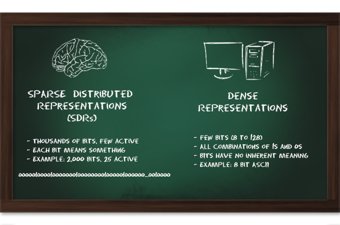

The Neuroscience Behind Grok, Part 2
NOTE: Numenta has announced a strategic partnership with Avik Partners, please read more about the future of Grok for IT Analytics.
This is the second post in a series describing how the brain works, and how this benefits Grok. The content is based on lectures given by Jeff Hawkins describing Grok’s detailed model of a layer of cells in the neocortex, called the Cortical Learning Algorithm (CLA).
Previously we quoted an AI expert who said, “one of biggest problems in AI—no, the only problem in AI—is the problem of representation.” What exactly are “representations,” and why do we say that “Sparse Distributed Representations” (SDRs) are critical to modeling human intelligence?
Representations are patterns in a computer or a brain that represent something in the real world. They are building blocks to understanding our world, that allow us to answer questions such as, “what is this?” and “what does this do?”

That doesn’t sound so complicated. Computer programs use bytes and words to represent everything from your age, to the color of a car, to the features of a product. This works well when all you want your computer to do is keep track of things. But how do you represent the relationship of things in the real world? Coming up with a label called “car” is easy; knowing a car is similar to a truck or that it can be used for transportation is hard. A car might be related to hundreds of other objects in complicated ways. This type of knowledge is surprisingly difficult to capture in the precise realm of computers.
Your brain also forms representations. The brain’s representations consist of the activity of neurons, which ultimately derive from the inputs from your senses. The set of neurons representing “car” are fired when you see any car from any direction, in any lighting condition, even if a door is open or the car is crumpled. To manage this complexity, you’d think that all of your neurons must be firing all the time, in a dense cacophony of activity.
You’d think. But you’d be wrong.
No matter how furiously your brain is working, only a small percentage of neurons are active at any given time. Most are silent, and the neurons that fire actually inhibit other neurons nearby from firing. How can this be?
Let’s start by looking more closely at how computers represent data, which is sometimes called “dense” representations. In a computer representation there are a relatively small number of bits, and all combinations of ones and zeroes are used. In ASCII code, for example, the string “01101101” represents the letter “m.” The individual 1s and 0s mean nothing. The bits only have meaning as a group, and a programmer assigns the actual representations. This makes them inflexible: if one bit is missing or changed, then the entire meaning changes or is incomprehensible. And an ASCII representation doesn’t tell you anything about the properties of the letter “m” it represents.
Sparse Distributed Representations, by contrast, consist of very long strings that are mostly 0s. Grok representations usually have 2,000 digits, of which only 2% (or about 40) are 1s. This emulates the sparsity in the brain, where only a few cells are active at any time. However, each of the 1s has meaning. Imagine a game similar to Twenty Questions, except that you can ask 2,000 questions. It turns out you can build a system where any given word has a "Yes" answer to about 40 of those questions, and “No” for everything else. Note that if any two words share a “Yes” for the same question, they have something in common. For example, both might be people, or both might be bigger than a breadbox. Also, the questions and answers are not assigned, but are learned through repeated observation.
Continuing the analogy, let’s say you want to store this information. You don’t have to record the answers to all 2,000 questions. You can store the numbers of the 40 questions that had “Yes” answers (in computer terms, you can store an index of active bits). You can even take a random sample of 10 “Yes” answers, and still confidently identify your word. This is more like Name That Tune—I can name that word in ten “Yes” answers. If you do the math, it turns out that it is extremely unlikely that you will guess the wrong word if you know ten of the correct “Yes” answers. But even if you did, it would still share ten common attributes, so your mistake would represent something else that was similar. This principle of “semantic generalization” is a critical differentiating factor between flexible brains and “brittle” artificial intelligence. Humans effortlessly use synonyms: “car,” “Prius,” "automobile," etc. And our perception also degrades gracefully. If you only see the hood of a car, or a car with someone in front of it, or read the letters "autmobile," you filter out the noise and extract the essence of “car” from the partial pattern you see.
To summarize, SDRs are very long strings of mostly 0s that represent knowledge and meaning, and form the “language” of the brain. The principles of SDRs enable flexible recognition of similar patterns, and graceful degradation of noisy input. As a result, it is difficult to imagine how to build machine intelligence without SDRs. The next post in this series will discuss how SDRs are used to learn patterns.
Further information:
- CLA white paper. This paper discusses the Cortical Learning Algorithm in detail. It precedes Grok and therefore does not describe how CLA applies to Grok.
- Video on SDRs. This talk by Jeff Hawkins goes into more detail, including the SDR property of “union,” which makes it easy to determine if a new pattern has been seen before. This, in turn, forms the basis of Grok’s anomaly detection algorithms.
- Introducing the first ever Sparse Football Pool! and Super Bowl Neuroscience. These blog posts describe a fun example of the principles of sparsity applied to a poll on a football game.
- The Neuroscience Behind Grok, Part 1. This is the first part of this series, providing an overview of how the brain is a predictive modeling memory system.